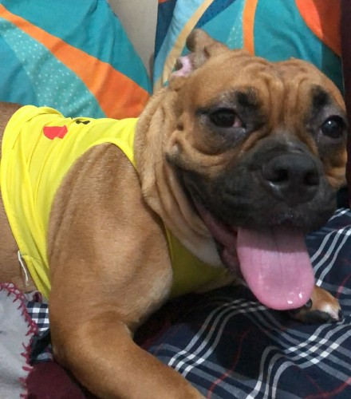
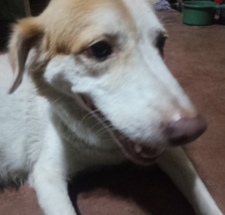
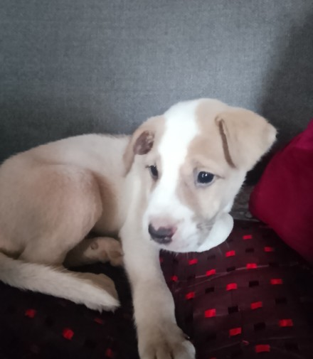
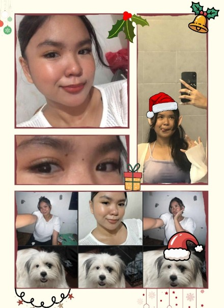
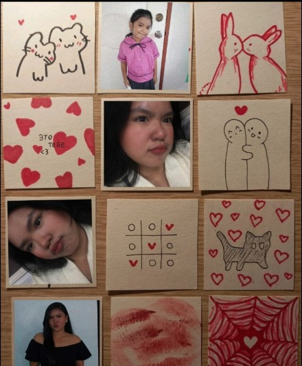

DEPARTMENT OF MY HEART
PATIENT NO. 8 · Jayden Sweet
“
There is a word in medicine — prognosis.
Not certainty.
Just the most careful, most honest guess
at what comes next.
Mine, for what it is worth, is you.
Continued. Right here.
Because you are not the kind of person
who reads the chart and walks away.
You pull the chair closer.
And I know this the way a patient knows a good doctor
not from any proof they can hold,
but from the feeling of being in someone's hands
and knowing, without being told,
that those hands are not going to let go.
”
MEDICAL RECORD — LOVE WARD
The babies who make our world softer



Every pill, a piece of my heart


PRESCRIPTION FOR MY HEART
There is a train that runs through the stars,
carrying strangers toward places
they have never been
and cannot yet name.
Nobody chooses the route.
Nobody knows the next stop.
You just board, and you trust,
and somewhere between one world and the next
you find the person
who makes the traveling worth it.
That is what you are to me.
Not the destination.
The reason I do not mind
that the journey has no end.
Eight months of stars behind us.
Every one of them, yours.
Every one of them, ours.
With all my love,
Jayden